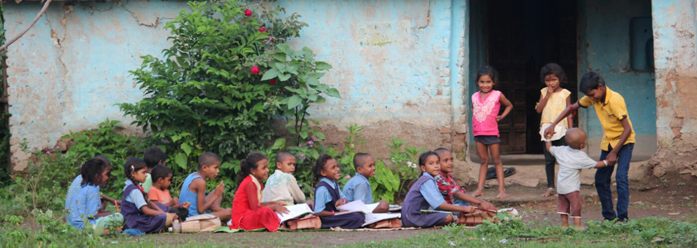

VISION
The vision of Alight India Foundation is to create a society where every individual, regardless of their background, has the opportunity to lead a life of dignity and self-sufficiency. We envision a future where education, healthcare, and livelihood opportunities are accessible to all, empowering underprivileged children, youth, and women to break free from the cycles of poverty and ignorance.
We aim to be a catalyst for sustainable development by fostering a culture of civic responsibility and engagement, encouraging the privileged sectors of society to actively participate in the journey towards social equality. By integrating business acumen with social initiatives, we strive to create scalable and sustainable models of development that not only uplift communities but also instill a sense of accountability and excellence in every endeavor.
Our vision is to build a nation where social equity is a reality, governance is transparent, and every individual contributes to the collective progress, ensuring a brighter, more inclusive future for all.
STRATEGIC GOALS OF ALIGHT INDIA FOUNDATION
Act as a catalyst for sustainable transformation in the lives of underprivileged children and families through a holistic, life-cycle development approach.
Empower global civil society to actively participate in the transformation process through the philosophy of civic-driven change.
Adopt the highest standards of governance to become a leading knowledge and technology-driven, innovative, and scalable development institution.